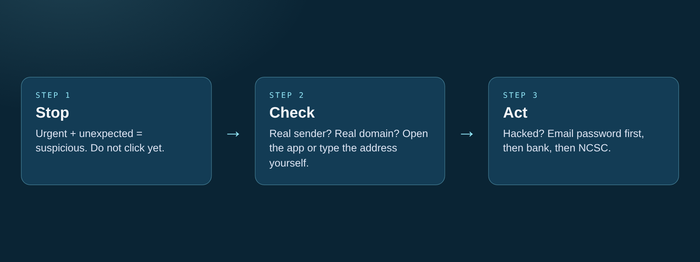

Safe online behaviour & incident response
Slow down before you click. If something goes wrong, act fast and in the right order. The Swiss NCSC received 64,733 reports of cyber incidents in 2025. For how phishing tricks work, see Social Engineering.

Recognizing urgent social engineering tactics and knowing emergency recovery steps.
Everyday habits
- Urgent + unexpected = suspicious.
- Check the real sender and domain.
- Open the app or type the address yourself.
- Share less personal info online.
I think I've been hacked: emergency checklist
- Change your email password from a clean device.
- Log out of all sessions and check for forwarding rules.
- Turn on MFA.
- Call your bank if money is involved.
- Warn your contacts.
- Report it to the NCSC (and police if money was lost).
- If extorted: don't pay.
Example
An SMS claiming a parcel is held for CHF 2.90. Instead of clicking the link, you check the official Swiss Post app, find no package, and safely delete the scam message.
Quick tips
- Stop, check, then act.
- Go to the site yourself, don't use the link.
- Know who to call: bank, then NCSC.